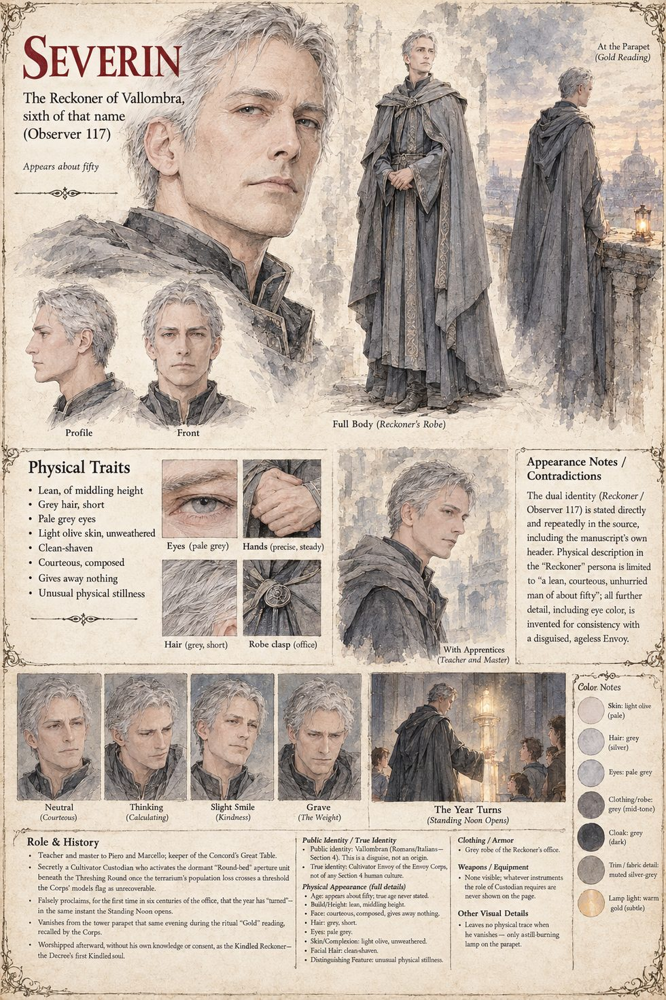

Severin
The Reckoner of Vallombra, sixth of that name · Observer 117, Custodian of record · appears about fifty
A lean, courteous, unhurried astronomer-priest, sixth of his name to keep the Concord's Table from the tower beside the Threshing Round, who teaches his seven apprentices that a Reckoner who cannot show his work is merely a priest, and a priest is a man who has stopped being checkable. When the Ashduct hills breathe and the sun withdraws, he extends the year's grace from three days to a season and carries the missed appointments forward, entry upon entry. A week before the third spring's First Furrow he nails a line to the tower door that no notice has ever carried: the sun will stand over the Round at the sixth hour, and the ash will part to let it. Marcello asks for the derivation. It is not in the tables.
He is also Observer 117 of the Cultivator Envoy Corps, Custodian of record for a dormant unit beneath the tower. He files reports with no first-person pronoun, is answered with the single word Noted, and keeps in the vault's margin a private table of the dead children he can name, Nina ninth among them. He activates the unit himself; that evening a recall names the narrow north stair, and he is gone from the parapet before Piero has finished turning round, with the lamp still burning. He never learns, so far as the file shows, that the Order will worship him as the Kindled Reckoner. Reassigned to a world whose sky is entirely clear, he notes in his first report that it has a great many appointments, and, on a struck-through second line, that nobody there hums when they count.
“The residue holds.”